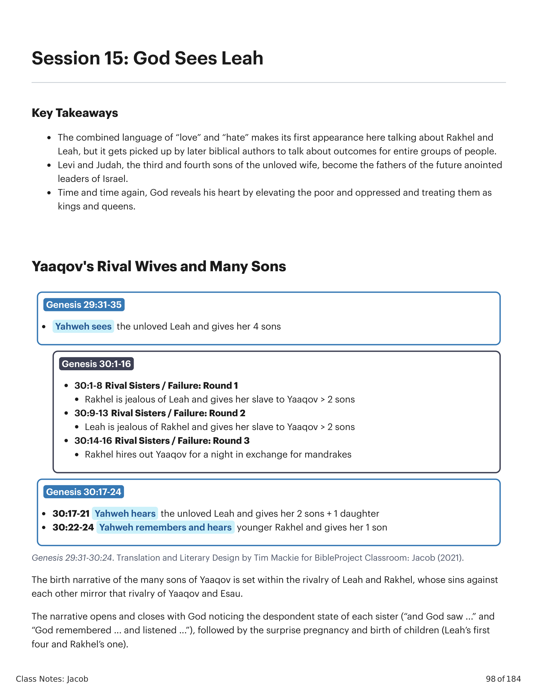
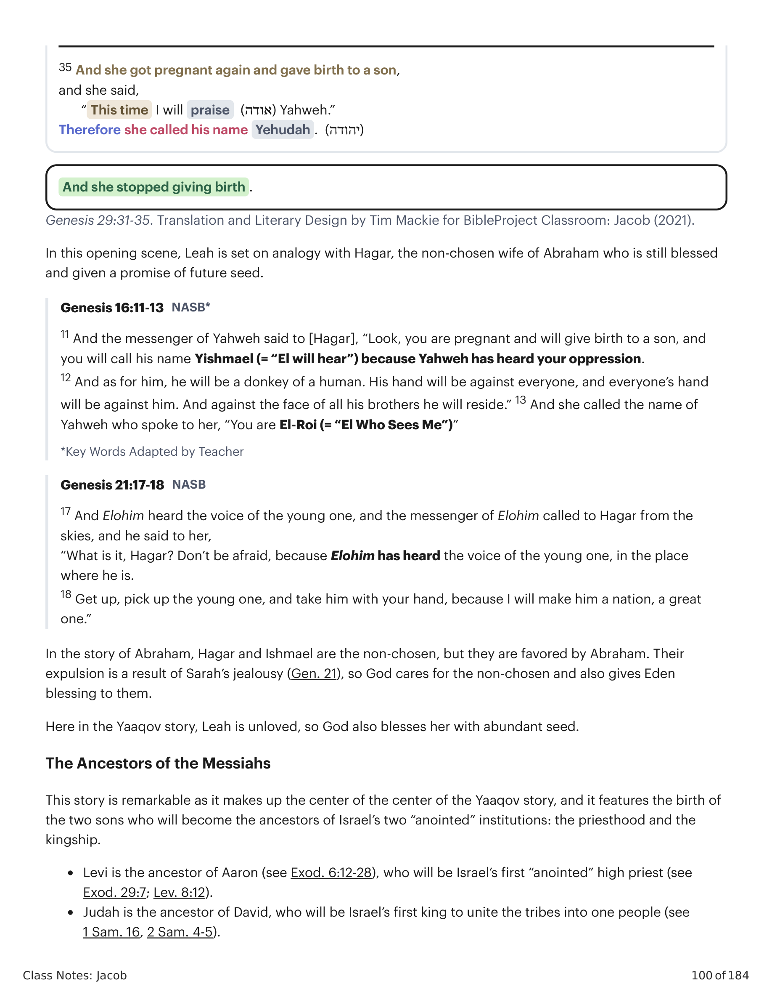
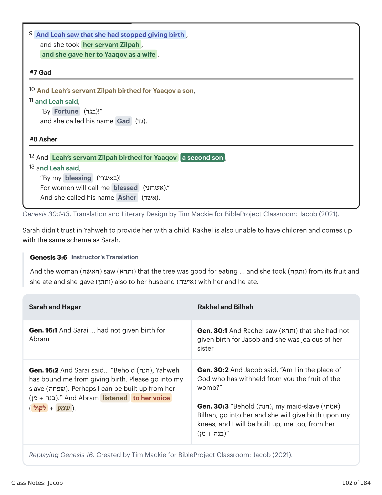
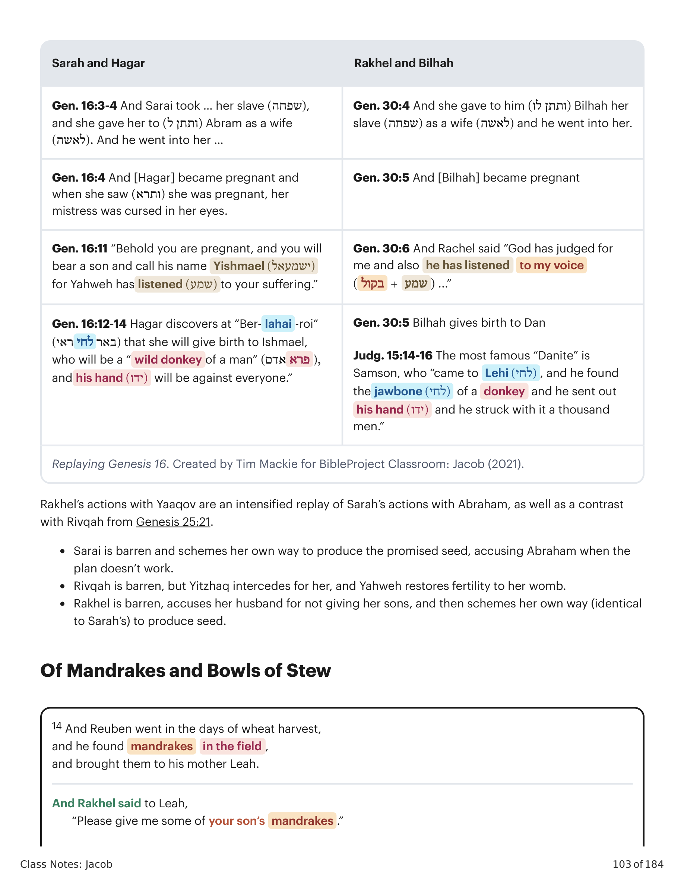
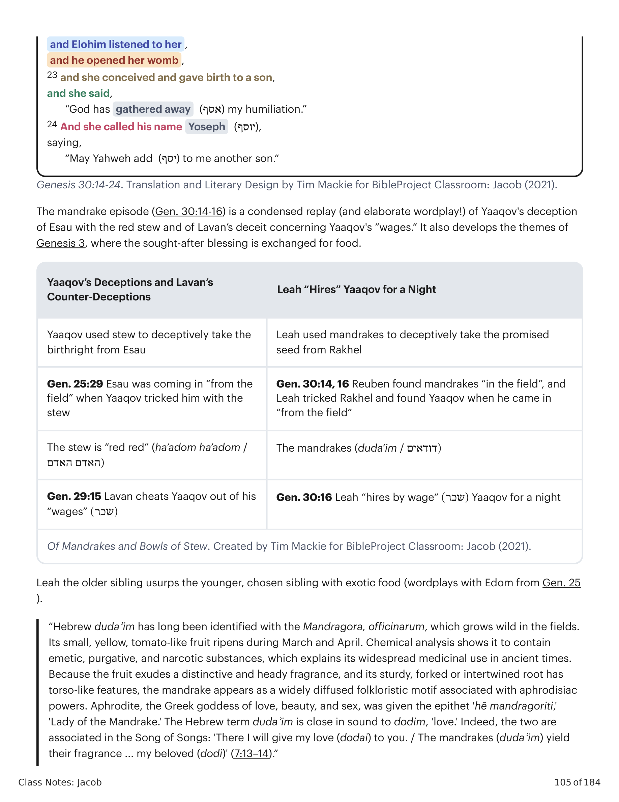
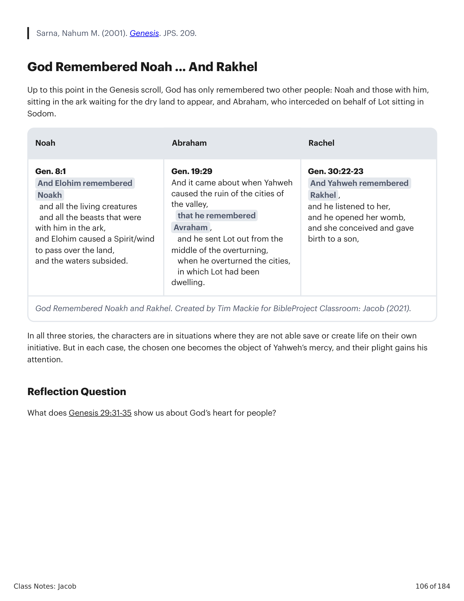

A narrativa do nascimento dos muitos filhos de Yaaqov se dá dentro da rivalidade de Leah e Rakhel, cujos pecados uma contra a outra espelham a rivalidade de Yaaqov e Esaú. A narrativa abre e fecha com Deus notando o estado desanimado de cada irmã ("e Deus viu..." e "Deus se lembrou... e ouviu..."), seguido pela gravidez surpresa e nascimento de filhos (os primeiros quatro de Leah e o único de Rakhel). Dentro deste enquadramento de "dom divino", há três narrativas de fracasso das irmãs tramando gerar sua própria bênção, cada uma modelada sobre narrativas anteriores sobre Abraão, Sarai e Hagar, ou sobre Yaaqov e Esaú.The birth narrative of the many sons of Yaaqov is set within the rivalry of Leah and Rakhel, whose sins against each other mirror that rivalry of Yaaqov and Esau. The narrative opens and closes with God noticing the despondent state of each sister ("and God saw ..." and "God remembered ... and listened ..."), followed by the surprise pregnancy and birth of children. Inside of this "divine gift" frame, there are three failure narratives of the sisters scheming to generate their own blessing, each one patterned after earlier narratives about Abraham, Sarah, and Hagar, or about Yaaqov and Esau.

Gênesis 29:31-30:24. Tradução e Design Literário por Tim Mackie para BibleProject Classroom: Jacó (2021).Genesis 29:31-30:24. Translation and Literary Design by Tim Mackie for BibleProject Classroom: Jacob (2021).
31 E Yahweh viu que Leah era odiada, e abriu a sua madre, mas Rakhel era estéril. 32 E Leah concebeu e deu à luz um filho, e chamou o seu nome Rúben, porque disse: "Porque Yahweh tem visto a minha aflição, agora meu marido me amará." 33 E ela concebeu outra vez, e deu à luz um filho, e disse: "Porque Yahweh ouviu que eu era odiada, também me deu este." E chamou o seu nome Simeão. 34 E concebeu outra vez, e deu à luz um filho, e disse: "Agora, desta vez meu marido se apegará a mim, porque lhe tenho dado três filhos." Por isso chamou o seu nome Levi. 35 E concebeu outra vez, e deu à luz um filho, e disse: "Esta vez louvarei a Yahweh." Portanto chamou o seu nome Judá. E cessou de dar à luz.31 And Yahweh saw that Leah was hated, and he opened her womb, but Rakhel was barren. 32 And Leah became pregnant and gave birth to a son, and she called his name Reuben, for she said, "Because Yahweh has seen my oppression, for now my husband will love me." 33 And Leah became pregnant again and gave birth to a son, and she said, "Because Yahweh has heard that I was hated, and he has also given me this one," and she called his name Shimon. 34 And she became pregnant again and gave birth to a son, and she said, "Now, this time my husband will be attached to me, because I have borne him three sons." Therefore his name was called Levi. 35 And she got pregnant again and gave birth to a son, and she said, "This time I will praise Yahweh." Therefore she called his name Yehudah. And she stopped giving birth.

Gênesis 29:31-35. Tradução e Design Literário por Tim Mackie para BibleProject Classroom: Jacó (2021).Genesis 29:31-35. Translation and Literary Design by Tim Mackie for BibleProject Classroom: Jacob (2021).
Nesta cena de abertura, Leah é posta em analogia com Hagar, a esposa não-escolhida de Abraão que ainda assim é abençoada e recebe promessa de futura semente. Aqui na história de Yaaqov, Leah não é amada, por isso Deus também a abençoa com semente abundante. Esta história é notável por compor o centro do centro da história de Yaaqov, e apresenta o nascimento dos dois filhos que se tornarão os antepassados das duas instituições "ungidas" de Israel: o sacerdócio e a realeza. Levi é o antepassado de Arão, o primeiro sumo sacerdote "ungido" de Israel. Judah é o antepassado de Davi, o primeiro rei a unir as tribos em um só povo.In this opening scene, Leah is set on analogy with Hagar, the non-chosen wife of Abraham who is still blessed and given a promise of future seed. Here in the Yaaqov story, Leah is unloved, so God also blesses her with abundant seed. This story is remarkable as it makes up the center of the center of the Yaaqov story, and it features the birth of the two sons who will become the ancestors of Israel's two "anointed" institutions: the priesthood and the kingship. Levi is the ancestor of Aaron, who will be Israel's first "anointed" high priest. Judah is the ancestor of David, who will be Israel's first king to unite the tribes into one people.
1 E Rakhel viu que não havia dado à luz para Yaaqov, e teve ciúme de sua irmã; e disse a Yaaqov: "Dá-me filhos! E se não, morrerei!" 2 E a ira de Yaaqov se acendeu contra Rakhel, e ele disse: "Estou eu no lugar de Elohim, que te privou do fruto do ventre?" 3 E ela disse: "Eis aqui minha serva Bila. Entra a ela, para que dê à luz sobre meus joelhos, e para que também por ela eu seja edificada." 4 E ela deu-lhe a sua serva Bila por mulher, e Yaaqov entrou a ela. 5 E Bila concebeu e deu à luz para Yaaqov um filho, 6 e Rakhel disse: "Deus me vindicou, e também ouviu a minha voz, e deu-me um filho." Portanto chamou o seu nome Dan. 7 E a serva de Rakhel, Bila, concebeu outra vez, e deu à luz para Yaaqov um segundo filho. 8 E Rakhel disse: "Pelejas de Elohim tenho pelejado com minha irmã, e tenho prevalecido!" E chamou o seu nome Naftali. 9 E Leah viu que havia cessado de dar à luz, e tomou a sua serva Zilpa, e deu-a a Yaaqov por mulher. 10 E a serva de Leah, Zilpa, deu à luz para Yaaqov um filho. 11 E Leah disse: "Por fortuna!" E chamou o seu nome Gad. 12 E a serva de Leah, Zilpa, deu à luz para Yaaqov um segundo filho. 13 E Leah disse: "Por minha bem-aventurança! Pois as mulheres me chamarão bem-aventurada." E chamou o seu nome Aser.1 And Rakhel saw that she had not given birth for Yaaqov, and she became jealous of her sister; and she said to Yaaqov, "Give me sons! And if not, I'm going to die!" 2 And Yaaqov's anger was hot against Rakhel, and he said, "Am I in the place of Elohim, who has withheld from you the fruit of the womb?" 3 And she said, "Here is my servant Bilhah. Go in to her, so she can give birth onto my knees, and from her I also will be built up." 4 And she gave to him her servant Bilhah as a wife, and Yaaqov went in to her. 5 And Bilhah conceived and birthed for Yaaqov a son, 6 and Rakhel said, "God has vindicated me, and also has heard my voice, and has given me a son." Therefore she called his name Dan. 7 And Rakhel's servant Bilhah conceived again and birthed for Yaaqov a second son. 8 And Rakhel said, "Wrestlings of Elohim I have wrestled with my sister, and I have prevailed!" And she called his name Naphtali. 9 And Leah saw that she had stopped giving birth, and she took her servant Zilpah, and she gave her to Yaaqov as a wife. 10 And Leah's servant Zilpah birthed for Yaaqov a son, 11 and Leah said, "By Fortune!" and she called his name Gad. 12 And Leah's servant Zilpah birthed for Yaaqov a second son, 13 and Leah said, "By my blessing! For women will call me blessed." And she called his name Asher.

Relembrando Gênesis 16. Criado por Tim Mackie para BibleProject Classroom: Jacó (2021).Replaying Genesis 16. Created by Tim Mackie for BibleProject Classroom: Jacob (2021).
Sarai não confiou em Yahweh para lhe prover um filho. Rakhel também é incapaz de ter filhos e surge com o mesmo esquema de Sarai. As ações de Rakhel com Yaaqov são uma reconstituição intensificada das ações de Sarai com Abraão, bem como um contraste com Rivqah em Gênesis 25:21. Sarai é estéril e tramou seu próprio caminho para produzir a semente prometida, acusando Abraão quando o plano não funciona. Rivqah é estéril, mas Yitskhaq intercede por ela, e Yahweh restaura a fertilidade ao seu ventre. Rakhel é estéril, acusa o marido por não lhe dar filhos, e então tramou seu próprio caminho (idêntico ao de Sarai) para produzir semente.Sarah didn't trust in Yahweh to provide her with a child. Rakhel is also unable to have children and comes up with the same scheme as Sarah. Rakhel's actions with Yaaqov are an intensified replay of Sarah's actions with Abraham, as well as a contrast with Rivqah from Genesis 25:21. Sarai is barren and schemes her own way to produce the promised seed, accusing Abraham when the plan doesn't work. Rivqah is barren, but Yitzhaq intercedes for her, and Yahweh restores fertility to her womb. Rakhel is barren, accuses her husband for not giving her sons, and then schemes her own way (identical to Sarah's) to produce seed.
14 E Rúben saiu nos dias da ceifa do trigo, e achou mandrágoras no campo, e as trouxe à sua mãe Leah. E Rakhel disse a Leah: "Dá-me, peço-te, das mandrágoras de teu filho." 15 E ela lhe disse: "É pouco que tenhas tomado meu marido, e queiras também tomar as mandrágoras de meu filho?!" E Rakhel disse: "Pois ele se deitará contigo esta noite, em lugar das mandrágoras de teu filho." 16 E Yaaqov veio do campo à tarde, e Leah saiu a encontrá-lo, e disse: "Hás de entrar a mim, porque certamente te tenho alugado com as mandrágoras de meu filho." E deitou-se com ela naquela noite. 17 E Yahweh ouviu a Leah, e ela concebeu, e deu à luz um quinto filho. 18 E Leah disse: "Yahweh me deu o meu aluguel, porquanto dei minha serva a meu marido." E chamou o seu nome Issacar. 19 E Leah concebeu outra vez, e deu à luz um sexto filho para Yaaqov. 20 E Leah disse: "Yahweh me deu um bom presente; esta vez meu marido me exaltará, porque lhe tenho dado seis filhos." E chamou o seu nome Zebulom. 21 E depois deu à luz uma filha, e chamou o seu nome Diná. 22 E Elohim se lembrou de Rakhel, e Elohim a ouviu, e abriu a sua madre. 23 E ela concebeu, e deu à luz um filho, e disse: "Deus tirou a minha afronta." 24 E chamou o seu nome José, dizendo: "Yahweh me acrescente outro filho."14 And Reuben went in the days of wheat harvest, and he found mandrakes in the field, and brought them to his mother Leah. And Rakhel said to Leah, "Please give me some of your son's mandrakes." 15 And she said to her, "Is it a small matter for you to take my husband? And would you also take my son's mandrakes?!" And Rakhel said, "Therefore, he can lay with you this night, in the place of your son's mandrakes." 16 And Yaaqov came in from the field in the evening, and Leah went out to meet him and she said, "You must come in to me, for I have surely paid a wage for you, with my son's mandrakes." And he lay with her that night. 17 And Yahweh listened to Leah, and she became pregnant and gave birth to a fifth son, 18 and Leah said, "Yahweh has given my wage, in that I gave my female slave to my husband." And she called his name Yissakhar. 19 And Leah became pregnant again and gave birth to a sixth son to Yaaqov, 20 and Leah said, "Yahweh has gifted me with a good gift. This time my husband will exalt me, because I have birthed six sons for him." And she called his name Zebulun. 21 And afterward she gave birth to a daughter, and she called her name Dinah. 22 And Elohim remembered Rakhel, and Elohim listened to her, and he opened her womb, 23 and she conceived and gave birth to a son, and she said, "God has gathered away my humiliation." 24 And she called his name Yoseph, saying, "May Yahweh add to me another son."

De Mandrágoras e Tigelas de Ensopado. Criado por Tim Mackie para BibleProject Classroom: Jacó (2021).Of Mandrakes and Bowls of Stew. Created by Tim Mackie for BibleProject Classroom: Jacob (2021).
O episódio da mandrágora (Gn 30:14-16) é uma reconstituição condensada (e elaborada troca de palavras!) do engano de Yaaqov a Esaú com o ensopado vermelho e do engano de Lavan concernente aos "salários" de Yaaqov. Também desenvolve os temas de Gênesis 3, onde a bênção almejada é trocada por comida. A irmã mais velha, Leah, usurpa a irmã mais nova e escolhida com comida exótica (troca de palavras com Edom de Gn 25). O hebraico dudaʾim tem sido identificado com a Mandragora officinarum, que cresce selvagem nos campos. Seu pequeno fruto amarelo, semelhante a um tomate, amadurece durante março e abril. Por sua fragrância marcante e enraizamento torsoide, a mandrágora aparece como um motivo folclórico amplamente difundido associado a poderes afrodisíacos. (Sarna, Nahum M. (2001). Genesis. JPS. 209.)The mandrake episode (Gen. 30:14-16) is a condensed replay (and elaborate wordplay!) of Yaaqov's deception of Esau with the red stew and of Lavan's deceit concerning Yaaqov's "wages." It also develops the themes of Genesis 3, where the sought-after blessing is exchanged for food. Leah the older sibling usurps the younger, chosen sibling with exotic food (wordplays with Edom from Gen. 25). Hebrew dudaʾim has long been identified with the Mandragora officinarum, which grows wild in the fields. Its small, yellow, tomato-like fruit ripens during March and April. Because the fruit exudes a distinctive and heady fragrance, and its sturdy, forked or intertwined root has torso-like features, the mandrake appears as a widely diffused folkloristic motif associated with aphrodisiac powers. (Sarna, Nahum M. (2001). Genesis. JPS. 209.)
Até este ponto no rolo de Gênesis, Deus só se lembrou de mais duas pessoas: Noá e os que com ele estavam, sentados na arca aguardando o aparecimento da terra seca, e Abraão, que intercedeu em favor de Ló sentado em Sodoma. Em todas as três histórias, os personagens estão em situações em que não são capazes de salvar ou criar vida por sua própria iniciativa. Mas em cada caso, o escolhido se torna objeto da misericórdia de Yahweh, e sua aflição ganha sua atenção.Up to this point in the Genesis scroll, God has only remembered two other people: Noah and those with him, sitting in the ark waiting for the dry land to appear, and Abraham, who interceded on behalf of Lot sitting in Sodom. In all three stories, the characters are in situations where they are not able save or create life on their own initiative. But in each case, the chosen one becomes the object of Yahweh's mercy, and their plight gains his attention.

Deus Se Lembrour de Noá e Rakhel. Criado por Tim Mackie para BibleProject Classroom: Jacó (2021).God Remembered Noakh and Rakhel. Created by Tim Mackie for BibleProject Classroom: Jacob (2021).

Deus Se Lembrour de Noá e Rakhel. Criado por Tim Mackie para BibleProject Classroom: Jacó (2021).God Remembered Noakh and Rakhel. Created by Tim Mackie for BibleProject Classroom: Jacob (2021).
O que Gênesis 29:31-35 nos mostra sobre o coração de Deus pelas pessoas?What does Genesis 29:31-35 show us about God's heart for people?